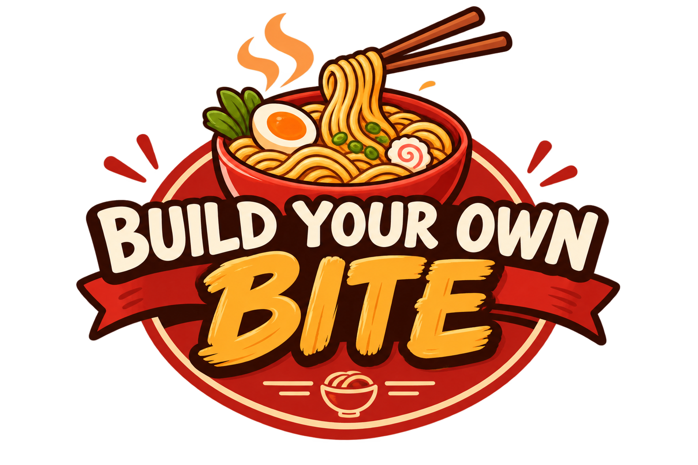

Photo
Sheena Dugoan
Designer

Build Your Own BiteABOUT US
Build Your Own Bite is a convenient online noodle ordering system created for customers in Manolo Fortich. We make every meal easy to customize, simple to order, and enjoyable from start to finish.
We created Build Your Own Bite to solve long waiting lines and confusing food orders during busy hours. Our goal is to help customers choose noodles, spice levels, add-ons, and ordering options without the hassle.
We provide a fast and friendly ordering experience for dine-in, take-out, and delivery customers. With clear choices and convenient checkout, every customer can build a meal that fits their taste.
MEET THE TEAM
Designer
Developer